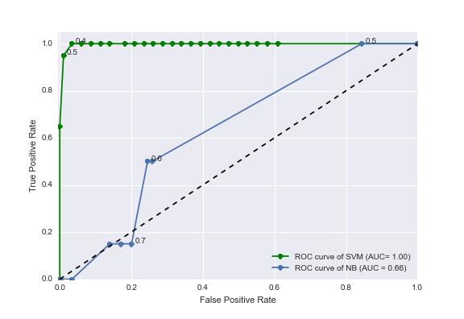
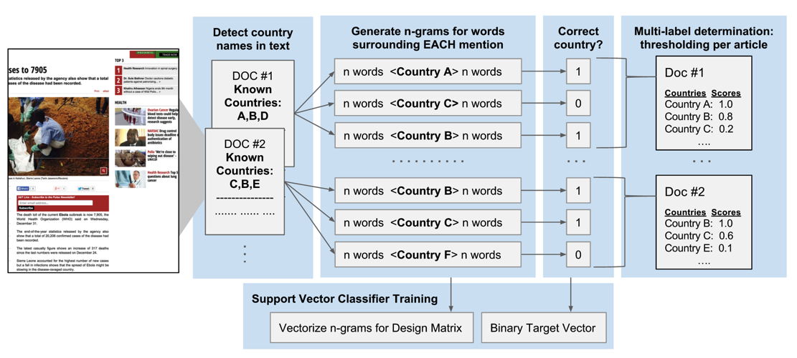
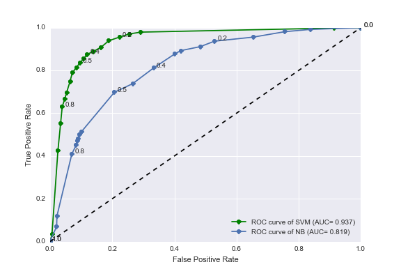
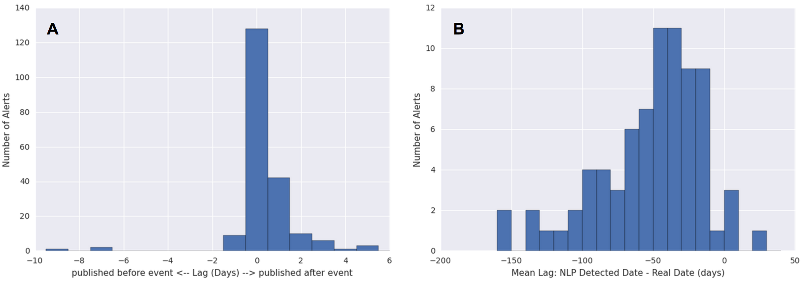
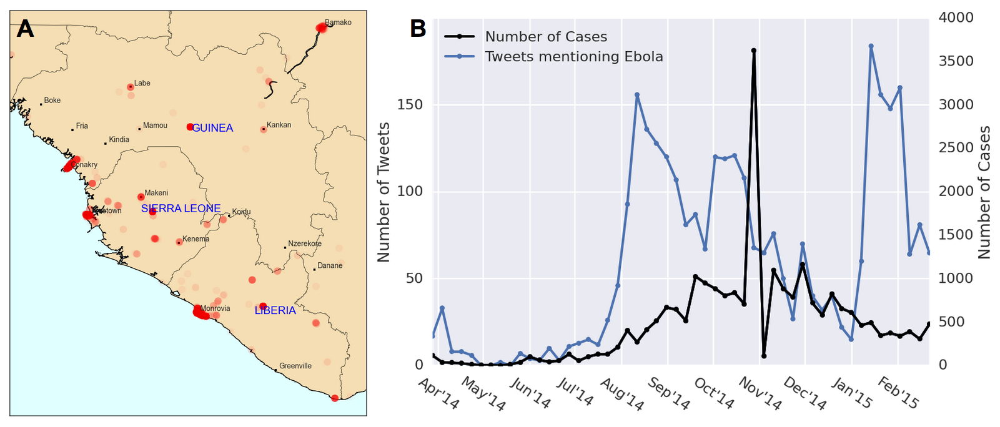
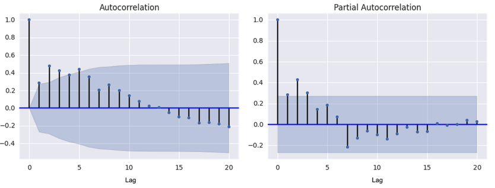
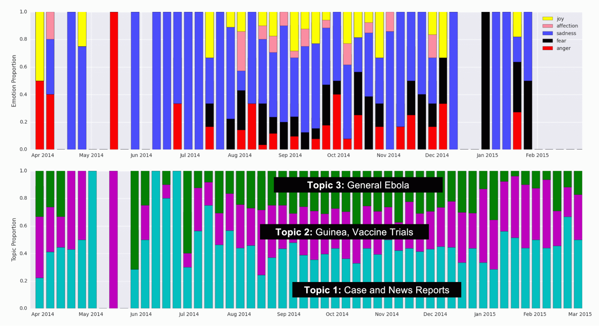
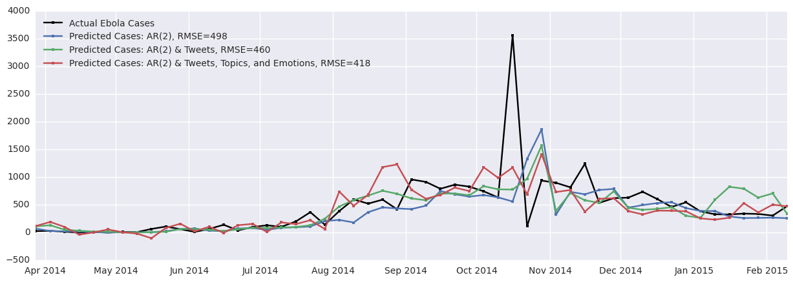
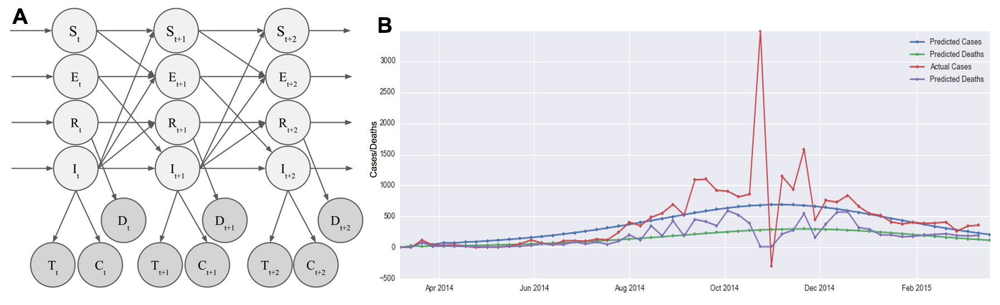
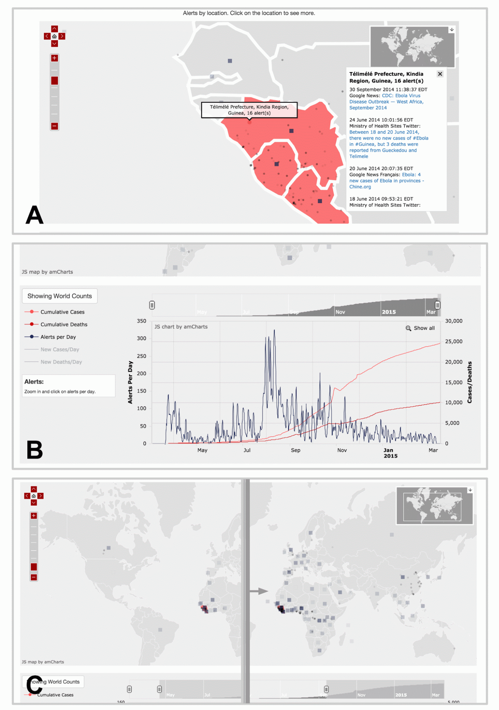

Ryan Lee, Sail Wu, Jacob Zhu
Instructor: Pavlos Protopapas
Teaching Fellow: Rahul Dave
Collaborator: Mauricio Santillana
Contents [show/hide]
AC 297r, Spring 2015
Harvard School of Engineering and Applied Sciences
Institute of Applied Computational Sciences (IACS)
Tools that augment official health agency reports with media data (social media in addition to traditional news media) to track the progression of a disease have been extremely valuable to epidemiologists. Our collaborators at Healthmap have developed a successful organization committed to providing up-to-date visualizations and compilations of media alerts for diseases such as Dengue fever and the flu. We contributed to three major areas of Healthmap. Firstly, we create an automatic tagging tool that organizes incoming media alerts by disease and location, easing the burden on human alert curation. Secondly, we explore novel ways to model the number of cases of a disease over time, improving their prediction so that hospitals can prepare healthcare resources in advance. We show that our tagging and prediction methods improve upon reasonable baselines by at least 10%. Lastly, we build a map and a timeline visualization that allows users to explore and learn from media data in an interactive way. Our tools improve the Healthmap process so that media data can be even more useful to epidemiologists.
Healthmap (www.healthmap.org) is a collaboration between epidemiologists and computational scientists to track in real-time ongoing outbreaks of major diseases [1]. The projects emphasize the use of media data as well as official health agency reports. We use the term “media” broadly to refer to social media in addition to traditional news media. Media provides real-time coverage of diseases around the world much more quickly than official health reports. For instance, the use of Twitter to predict the number of cases of flu in real-time has been well studied in academia [2-4].
A variety of sub-projects at Healthmap include predicting disease case counts based on multiple data sources (i.e. Twitter, Google Flu Trends, insurance claims) as well as visualizing cases and reports of Dengue fever. Visualizations that show when and where diseases (or reports of diseases) happen are very useful retroactively and in real time. Tools that visualize curated media reports enable epidemiologists and hospitals to better understand how a disease develops and prepare healthcare resources or advise government interventions.
Our goal for this project was to contribute useful computational tools to the Healthmap effort. We identified three major areas of Healthmap that could be improved. Firstly, we create an automatic tagging tool that organizes incoming media alerts by disease and location. Secondly, we explore novel ways to model the number of cases of a disease over time, improving their prediction. Thirdly, we build a map and timeline visualization that allows users to explore and learn from media data in an interactive way.
Human curation is currently used to organize the massive amounts of public-health-related media data scraped from the web and obtained via news feed APIs. In order to place incoming media alerts on a visualization and make the data useful, the location and date of the event mentioned in the text must be determined, along with the relevant disease. While human curation can be very accurate, it is time intensive and expensive. Our first contribution is a piece of software that is able to perform labeling automatically using machine learning. We develop and test a novel algorithm that learns the relevant vocabulary and grammar of words that indicate the importance of a mentioned location. This automated pipeline can speed up the Healthmap data cleaning and organization process by replacing human curators or acting as a first-pass curation that can reviewed quickly and efficiently by humans. This enables epidemiologists to view and use data that is as most up-to-date as possible.
Our second contribution is an improvement upon current prediction techniques used in the field. This helps epidemiologists predict the number of cases of a particular disease so that they can advise government actions. In addition, healthcare workers can better prepare for patient influx when the prediction of case counts is accurate. We improve upon current predictive models and introduce a new hidden Markov model (HMM) that is based on epidemic modelling. These approaches are tested with a data set of Ebola-related Tweets and Ebola case/death data from the World Health Organization (WHO).
Our last contribution is a visualization that displays the Ebola media alerts on a map and a timeline, allowing epidemiologists to discover patterns in the data at a glance. Similar visualizations already exist in Healthmap; however, we take a fresh approach by implementing new, interactive features that furthers discovery through data exploration.
News alerts related to public health are collected with automated web scraping tools at Healthmap every day. In order to organize this massive collection of links, healthmap curators tediously label each document with relevant information such as location and disease. One of the most important goals of our current work is to make that process faster using machine learning.
Our collaborators provided a dataset of 3455 alerts, which have been curated by humans. Most of the alerts are news articles from Google News. Other media sources included ProMED, Twitter, and official government agencies like the World Health Organization (WHO). The alerts were curated and labeled with the relevant disease and the latitude and longitude of the event referenced in the article. The name of the location is also specified at varying levels of resolution. Some articles were labeled with an entire country, while some were tagged with more specific locations such as individual provinces or cities. The diseases mentioned were Ebola (717 alerts), influenza (1638 alerts), Dengue fever (980 alerts), and Cholera (120 alerts). The alerts were collected by Healthmap over a span of 3 months (Dec 2014 to Mar 2015).
The training dataset included links to each media alert, and web scraping was done to collect text data. As can be expected from scraping any web source, we encountered permissions errors and broken links. Some websites did not allow programmatic access (i.e. ProMED) while some articles were no longer visible. In addition, many of the articles had been translated through a Google Translate API which does not allow easy scraping. To solve this problem, we scraped the original article link from the Google API page and translated it ourselves using another API called goslate. After this web scraping and translation process, we ended up with usable text from 2500 alerts.
We developed a tool to label each article with the disease it covers. Intuitively, one might suppose that disease tagging could be done simply by detecting disease names that occur in the text. Indeed, we use this method as a baseline for comparison. The challenge of using this naive method is that very often, text scraped from websites contain disease names that are not the main subject of the article. For instance, many disease names were found in links to other articles on the website.
We decided that the output of this classification task would be one disease label per media alert, since the vast majority (99.7%) of the human curated data had only one disease label per alert. So that our classifier would be able to detect alerts not mentioning any of the four disease types in our training data, we added a set of 100 news articles that were related to public health but did not cover any of the four diseases originally in our data set.
Textual data was transformed into vectors of numbers that machine learning algorithms can work with. For each article, the occurrence of a list of disease-specific words such as the disease name and words such as “flu shot”, “fever”, or “H1N1” were counted. Furthermore, we counted the frequency of the 5 words (to the left and the right) surrounding these detected words. The words surrounding these keywords were also combined to make n-grams of length n = 1 to 5, whose frequencies were also counted. This approach enabled us to make use of some of the information in the ordering of the words around the disease keywords. A vector containing the counts of each of the n-grams detected was generated per article. The vectors, along with the human-curated disease labels were used to train a support vector classifier (SVC). A random forest classifier was also tested, but it did not perform as well in cross-validation testing.
Figure 1 displays our results on a receiver-operator characteristic (ROC) curve. Varied across the ROC is the threshold of significance on the probability values generated by the classifier . These probabilities are those from an out-of-bag prediction that the article is labeled with a certain disease type. We also show the ROC results from the baseline classifier, which is a Naive Bayes classifier trained on only the counts of the disease names in each article. As can be seen, our bag of n-grams SVC performs quite well, with an area under the ROC curve close to 1.00 (green line). The accuracy and precision was around 0.98 for all disease types. The area under the ROC curve for the baseline approach (blue line) is only 0.66. Therefore, our method gives a significant improvement (~30% improvement) over the baseline intuitive/naive classifier that utilizes only the frequency of disease names in the text.
Figure 1. Receiver-operator characteristic (ROC) curves for the task of labeling articles with a disease type. The blue line shows the ROC curve from a naive method using disease name occurrences only (a Naive Bayes classifier trained with only disease names in its vocabulary). The green line shows the ROC curve from our improved method utilizing counts of n-grams surrounding disease keywords and a support vector machine (SVM) classifier.
The location of the subject of each media alert was determined by human curation in the training data. Some articles mentioned entire countries while some articles discussed a specific city or state. Our collaborator indicated that the automated tagging at the country resolution would be sufficient. We again developed a baseline method which only uses counts of country names in the text. While this naive method may be intuitively reasonable, it has difficulty determining the correct country when multiple countries are mentioned. Text scraped from websites often contain extraneous mentions of other country names.
Unlike disease type detection, more than 10% of media alerts in the training data are tagged with more than one country. These are articles that mention multiple countries in West Africa, for instance. Therefore, we adjusted our feature engineering and data analysis approach. A novel approach was formulated, where a trained classifier makes decisions on each location keyword mentioned in the article as opposed to the entire article (Figure 2).
Figure 2. A novel approach to assigning multiple country labels to articles. Each document (article or alert) is scanned for mentions of country names in a list of pre-determined country names. For each mention of any country name, n-grams are extracted from the surrounding text. Each mention of any country name is given a binary target label indicating the correctness of the label versus human curation. The vectorised counts of the n-grams along with the binary responses are used to train a SVC that makes decisions on each mention of a country, instead of each article. A multi-label determination is made for the entire article by combining the results from each country name mention.
We started with a predefined list of all country names and detected the occurrence of these country names in each alert. Each mention of a country was then used as a data point in the training process. Thus, if a news article mentioned multiple countries, then that article would contribute multiple data points to our training data.
Each mention of the country was labeled with a binary target: 1 if the subject of the article pertains to the mentioned country (as verified by human curation) and 0 otherwise. As with disease classification, the five words before and after these country names were combined (in the order in which they appeared in the article) to make n-grams of sizes varying from n = 1 to 5. The n-grams were counted and this produced a vector of vocabulary counts. The vectors, along with the binary correct/incorrect labels are used to train a SVC. This approach enables the classifier to make a binary decision on each mention of a country regardless of the disease/location type, allowing us to make use of mentions of countries that occur rarely in the corpus. The classifier is then able to learn about the significance of n-grams surrounding the country names regardless of the country name, essentially learning the grammar or vocabulary that indicates importance.
The multi-label prediction for the entire article is then an average of the binary decisions for each of the country name mentions in the article text. The threshold for when to call these averaged scores significant was varied and the ROC curve in Figure 3 was produced.
Figure 3. Receiver-operator characteristic (ROC) curves for the task of labeling articles with country names. The blue line shows the ROC curve from a naive method using country name occurrences only (a Naive Bayes classifier trained with only country names in its vocabulary). The green line shows the ROC curve from our improved method utilizing counts of n-grams surrounding country names and an support vector machine classifier.
As can be seen, our SVC n-gram classifier performs significantly better than the intuitive approach (a Naive Bayes classifier using only country name frequency). Our n-gram and SVM classifier increases the area under the ROC curve to 0.937 (green line) which is a 16% improvement over the Naive Bayes method (area under ROC curve = 0.819).
This improvement, we think, comes from the classifier learning the grammar of the sentences containing these keywords. For example, text scraped from a webpage containing a public health article with the word “election” next to a country name may indicate that the country name is not the subject of the public health article. Instead, the country may be mentioned as part of a link on the sidebar of the webpage. On the other hand, if the word “Ebola” is mentioned next to particular country name, then it may indicate that the country is relevant to the public health article.
We investigated adding HTML tag counts (such as occurrence of “<a>”) in addition to n-grams as features to improve the detection of words that are mentioned as part of sidebar links instead of in the main body of the article. This approach did not improve the area under the ROC curve significantly.
Future work on the automatic location tagging process should investigate using higher resolution location names (such as city or province names) as well as better scraping techniques to obtain higher quality textual data.
The final goal of automatic curation of media alerts was to predict the date of the article’s subject given its text and the date it was published. Although the date of publication is easily determined (as this information is included in news feed APIs), it is not necessarily the date of the event that the article covers. This date labeling is not currently done by the Healthmap curators. They simply store the date of publication on their website. We thought that having the actual date of the event may be useful to epidemiologists studying these news alerts.
We established a trivial baseline method of “predicting” the date an alert was published as the real event date. This baseline method assumes that media alerts are always published on the same day as the event that they cover, which may be a valid assumption for many articles. To characterize the performance of the baseline method, we needed to reference the ground truth. This was done for a subsample of about 200 alerts using Amazon Mechanical Turk (MTurk). Each alert was reviewed by three MTurk workers to ensure inter-worker accuracy. We manually resolved the conflicts that arose between the workers. The difference in the number of days between each alert’s publish date and the ground truth date obtained from MTurk readers was determined and this was used as a measure of lag or error for the baseline approach (Figure 4A).
To perform automatic machine prediction of the real date, we explored a variety of natural language processing (NLP) libraries that claimed to be able to extract dates from text. Since some articles use relative temporal words such as “tomorrow” or “last week”. These would have to be taken into account. For example, a mention of the words “next week” should indicate that the real event date is around 7 days after the date the media alert was published. Of the NLP tools that we surveyed, only a tool called parsedatetime could reliably extract these dates from the text and make use of a reference date to calculate the true date whenever it encountered relative temporal words.
The average lags/errors of the dates detected by parsedatetime per article are shown in Figure 4B. There is significant error in using this approach as compared to the baseline method of just predicting the date the alert was published. The order of magnitude increase in error can be attributed to systematic mistakes in the way parsedatetime handles relative temporal words. In addition, it was over-eager to identify any numbers detected as dates.
Figure 4: Errors in the prediction of real event dates. The lag between the real event date (as determined by human readers from Amazon Mechanical Turk) and the predicted date was calculated as the predicted date minus the real event date. The lag (in days) is therefore positive if the article is published after the event it references, and negative if it was published before. (A) The lags of the predicted date per article using the baseline approach of predicting the publish date. (B) The lags of the predicted date per article (average over all dates detected by the NLP tool) using an NLP approach.
We therefore decided not to pursue automatic date prediction for several reasons. The difficulty of improving the parsedatetime tool is twofold. Firstly dates must be extracted accurately given the textual information. Secondly, out of the multiple possible dates extracted per article, the correct date must be picked out. Both of these tasks would have required significant work given the current state of the parsedatetime results. Moreover, improvement work, which may or may not provide any significant gain in accuracy, may not be so helpful anyway. The data displayed in Healthmap (and often in epidemiology literature) is at a weekly resolution, and the errors of our baseline method (Figure 4A) is within 7 days. This means that the current baseline approach is probably good enough for all intensive purposes. Therefore, we decided to focus our attention to other aspects of the project.
Official health organizations (i.e. WHO) report weekly case counts that are lagged by a few weeks due to the time it takes to manually count cases, sometimes over remote geographical regions. An estimate of the current weekly case count of a particular disease is extremely valuable to epidemiologists and health workers. The data allows hospitals to prepare resources accordingly to meet expected demand.
The collaborators working at Healthmap have built tools to predict the number of cases of flu using mainly autoregressive models currently accepted in the scientific literature [5]. We apply the same models to Ebola, and make modifications which improve the prediction performance.
We work with a dataset of geotagged Tweets obtained from the Healthmap Twitter listener, collected over the course of a year from March 2014 to March 2015. We only retrieved Tweets mentioning the term “Ebola” within a geographic boundary defined by a rectangle with its northwest corner at (12.91° N, 15.55° W) and its southwest corner at (4.06° N, 7.16° W). This captures all Tweets from Guinea, Sierra Leone, and Liberia (Figure 5). Since few Twitter users live in western Africa and even fewer have geo-tagging turned on, we were only working with 3126 Tweets in total. Official case counts were obtained from WHO reports online.
Figure 5. Geotagged Tweet data and Ebola case counts. (A) A heatmap of our geotagged Tweets. As expected, Twitter users are clustered near city centers. Areas of high Tweet density near the country center (but not corresponding to a city) are assumed to be geotagged at the country level. (B) Tweets and cases of Ebola over time for Sierra Leone, Guinea, and Liberia. There appears to be two periods of hype before and after a central peak of Ebola cases near Nov 2014.
Given the Tweets from the current week, along with the case counts from the weeks before, our goal was to predict the case counts of the current week. We first examine a baseline autoregressive model:
$$C_t = \sum_{i=1}^2\alpha_iC_{t-i}$$
Where $C_t$ is the number of cases in the current week, and $C_{t-i}$ is the number of cases $i$ weeks before the current one. The coefficients $\alpha_i$ are determined by maximum likelihood estimation with the training data. To test the appropriateness of this autoregressive (AR) model on our Ebola WHO case count data, we plotted the autocorrelation function (ACF) and partial-autocorrelation function (PACF) (Figure 6) of the data. This time series displays a AR signature, more so than that of a moving average (MA) model. The AR coefficient chosen was AR(2) since the PACF seems to die down around two (or three) lags.
Figure 6. Autocorrelation function (ACF) and Partial autocorrelation function (PACF) for Ebola cases time series. The autocorrelation and partial autocorrelation functions were used as diagnostic tools to determine the appropriateness of fit for an autoregressive (AR) and/or moving average (MA) model. The PACP declines around lag 2 or 3 while the ACF declines more slowly.
Models with an added Tweet component are often used in literature to make use of the real-time nature of social media data [5]. We use the following model to incorporate the weekly Tweets time series.
$$C_t = \sum_{i=1}^2\alpha_iC_{t-i} + \sum_{i=0}^2\beta_iT_{t-i}$$
Where $T_t$ is the number of Tweets in the current week, $T_{t-i}$ is the number of Tweets $i$ weeks before, and $\beta_i$ are parameters estimated with maximum likelihood methods.
To improve upon the current model used in literature, we decided to add features to the data that are determined in an unsupervised manner with topic modelling and emotions keywords. Topic modelling was performed to extract a latent clustering of Tweets that probabilistically discuss different topics. A modified pLSI model (which is similar to Latent Dirichlet Allocation [6]) was used. Each Tweet is modeled as a bag of words belonging to one topic. Each of the words in the Tweet are chosen from a multinomial distribution over the vocabulary, where the distributions are determined on a per-topic basis. Expectation maximization was used in the maximum likelihood estimation of the parameters, and the number of topics (three) was chosen by inspection. This number was chosen because it seemed to produce topic words that made the most sense. Three topics were detected and the top words belonging in each topic were used to haracterize their “meaning”. Topic 1 had a high probability associated with words related to news outlet reports such as “cases”, “west Africa”, and “news”. Topic 2, we concluded, was mostly about vaccines and treatment, having high probability for words such as “#giveustheserum” and “vaccine”. The word “Guinea” had high probability in Tweets belonging to Topic 2 as well. The third topic seemed to have more general words pertaining to Ebola, and we could not make out a consistent theme. The proportion of labeled Tweets classified under each topic over time are shown in Figure 7 (bottom panel). Each Tweet was categorized as belonging to exactly one topic.
Previous work has explored adding heuristically determined categorizations of Tweets as features to improve modelling [3]. We perform a variation of this categorization by labelling the Tweets with five emotion classes that have been studied in natural language processing literature [7]. The five emotion categories are joy, sadness, anger, affection and fear. Keywords in each category were compiled from previous work [7] and Tweets containing these words were classified into their respective categories. Tweets containing words in multiple categories were counted twice. Tweets not in English were translated to English. Not many Tweets were classified with emotions due to suboptimal translation and the fact that list of keywords for each emotion was not comprehensive. Tweets not labeled with an emotion were not included in the emotion time series analysis. The proportions of labeled Tweets classified under each emotion over time are shown in Figure 7 (top panel).
Figure 7. Detected Topic and Emotion Tweet Proportions over Time. (Top) Proportion of Tweets labeled with emotions in each emotion category, over time. Keywords identified as markers for the five emotions (joy, affection, sadness, fear, and anger) were a priori identified and detected in Tweets. (Bottom) Proportion of Tweets that were categorized into each topic using topic modelling, during each week.
As can be seen, the proportion of Tweets in each topic and emotion remains relatively constant over time. At the start of the outbreak, around June of 2014, the proportion of Tweets belonging to Topic 1 (Case and News Reports) seems to be high, which may indicate that news channels and official reports spoke about Ebola first, before the general population started Tweeting about it. Further investigation could look into this effect where the media plays a big role in creating hype or awareness about a particular disease. In the emotions data, there are fewer data points, so some weeks don’t have bars. Therefore, the variation in the proportion of Tweets in each category is probably mostly noise.
The numbers of Tweets that fell into each emotion and topic category per week were added as features in the prediction modelling:
$$C_t = \sum_{i=1}^2\alpha_iC_{t-i} + \sum_{i=0}^2\beta_iT_{t-i}+\sum_{i=1}^3\sum_{i=0}^2\gamma_{j,i}L_{j,t-i} + \sum_{i=1}^3\sum_{i=0}^2\delta_{j,i}E_{j,t-i}$$
Where $L_{j,t-i}$ is the number of Tweets in topic $j$ during the week $i$ weeks before the current week, $E_{j,t-i}$ is the number of Tweets with emotion $j$ during the week $i$ weeks before the current week, and $\gamma_{j,i}$ and $\delta_{j,i}$ are parameters estimated with maximum likelihood methods.
The results of the three models, starting with the baseline autoregressive model along with the two variants discussed above (one with Tweets data added and one with additional topic and emotion data added) are shown in Figure 8.
Figure 8. Results of original and improved autoregressive models. The accuracy of the model increases as the Tweets timeseries and the topic and emotion time series are added to the model. Adding Tweets improves the prediction by 8% and adding topics and emotions improves the prediction by 16%.
As can be seen, the baseline RMSE between the actual cases and the predicted cases is 498, which is unfortunately quite high since many of the weekly case counts sum to around 500 cases. Adding the Tweet data improves prediction by 8% overall and adding the topic and emotion modelling improves the prediction by 16%.
The jagged nature of the case and Tweet timeseries contributes to the jagged predicted cases time series as these models are autoregressive in nature. In addition, there seems to be some lag in the prediction, especially near the peak of cases between October and November 2014. This is a common artifact seen in results of autoregressive models. One of the key assumptions of such a model is stationarity of the time series. As the Ebola case data is from a disease outbreak, this assumption may not be valid because the rate of spread of this disease may change over time. Important factors varying in time such as the number of currently infected individuals, societal responses, and recovery (along with subsequent immunity) could contribute to the non-stationarity of this time series.
Moreover, we might posit that a prediction model should produce smooth results to take into account that some of the variation in the data is due to noise. (It should not predict noise.) These concerns about the autoregressive models motivated our investigation of a hidden Markov model (HMM).
We propose a hidden Markov model shown in Figure 9A. At each time point, there are 4 hidden states that correspond to 4 different populations. We use the well known SEIR epidemic model [8-10] to model the dynamics of the Ebola outbreak. The state $S_t$ represents the population susceptible to Ebola at time $t$. The state $E_t$ represents the population that has been exposed to Ebola but is not infectious at time $t$. The state $I_t$ represents the population that is infected and infectious at time $t$. The state $R_t$ represents the population that has recovered at time $t$. A proportion of these $R$ cases are those who are dead. People flow through the 4 possible states in the order: S to E to I to R, and the rates of change of the proportion of the entire population in each state is well described by known differential equations [8]. The differential equations describing the dynamics of the SEIR model were discretized as has been done similarly in others’ work [11], as follows:
$$S_t = (1-\alpha I_{t-1})S_{t-1}$$ $$E_t = \alpha I_{t-1}S_{t-1} + (1-\beta)E_{t-1}$$ $$I_t = \beta E_{t-1} + (1-\gamma)I_{t-1}$$ $$R_t = R_{t-1} + \gamma I_{t-1}$$Where $\alpha \in (0,1)$ is a parameter determining the rate of exposure (people moving from the susceptible the exposed group), $\beta \in (0,1)$ is a parameter determining the incubation period (which affects movement from the exposed the infectious group), and $\gamma \in (0,1)$ is a parameter determining the rate of recovery (or death) (moving from the infectious the recovered/dead group). Initial conditions of the SEIR model are another parameter that must be determined.
We initially used a deterministic model for the hidden states, where the proportions of the population in each of the four SEIR states were determined for each time step using the above equations. We used three emitted states, with Gaussian emission probabilities:
$$P(T_t | I_t) \sim \mathcal{N}(\mu_T I_t, \sigma_T)$$ $$P(C_t | I_t) \sim \mathcal{N}(\mu_C I_t, \sigma_C)$$ $$P(D_t | R_t) \sim \mathcal{N}(\mu_D R_t, \sigma_D)$$where $T_t$ is the number of Tweets on week $t$, $C_t$ is the number of cases reported by the WHO on week $t$, and $D_t$ is the number of deaths reported by the WHO on week $t$. The parameters $\sigma_T$, $\sigma_C$, $\sigma_D$, $\mu_T$, $\mu_C$, and $\mu_D$ govern the Gaussian emission probabilities and the parameters $\alpha$, $\beta$, and $\gamma$ govern the SEIR transition (and its initial conditions). These were all determined with maximum likelihood estimation. The RMSE of the number of cases predicted by the deterministic model compared to the official case counts is 474 cases. This is comparable to the performance of the autoregressive models.
To create a “true” hidden Markov model, we added transition probabilities to the hidden state transitions in the SEIR model:
$$S_t = (1-\alpha I_{t-1})S_{t-1} + \epsilon_S$$ $$E_t = \alpha I_{t-1}S_{t-1} + (1-\beta)E_{t-1} + \epsilon_E$$ $$I_t = \beta E_{t-1} + (1-\gamma)I_{t-1} + \epsilon_I$$ $$R_t = R_{t-1} + \gamma I_{t-1} + \epsilon_R$$where $\epsilon_X \sim \mathcal{N}(0,\sigma_X)$ models Gaussian noise in the transition from $X_{t-1}$ to $X_t$. Newly introduced hidden transition parameters were also fitted using maximum likelihood estimation. The RMSE of the number of cases predicted by this model (with transition probabilities added) compared to the official case counts is 472 cases. This is comparable to the performance of the deterministic HMM and the autoregressive models. The results are shown in Figure 9B.
Figure 9. HMM and results. (A) Our hidden Markov model assumes 4 hidden states modelling the susceptible (S), exposed (E), infected (I), and recovered (R) populations. Hidden states transition according to the well-studied epidemiology SEIR model, with Gaussian error. Observed states are the number of Tweets (T), the number of reported cases (C), and the number of reported deaths (D). The emission probability was assumed to be Gaussian. (B) Results from the HMM model shows that we are able to trace the cases and the deaths relatively smoothly.
Compared to autoregressive models, the RMSE of the case predictions are similar. However, the RMSE is calculated assuming that the WHO numbers are the ground truth, when there is obviously quite some noise in their reporting. Our generative, Bayesian approach assumes an underlying model that takes into account the dynamics of an outbreak. It then assigns a probability distribution to observed Tweet, case, and death counts. This is able to therefore produce predictions that are smoother, without the noise seen in Figure 8. In this sense, this HMM is a better model in that it is able to reason about our belief of the truth of the number of cases and deaths vs. relying on noisy numbers reported by the WHO.
Most importantly, we are able to provide epidemiologists with an estimate of the parameters $\alpha$, $\beta$, and $\gamma$ describing the underlying outbreak dynamics, which would be extremely useful in forecasting future cases or in comparing the dynamics of different outbreaks across regions.
In addition, the HMM was optimized by maximising the likelihood of observing three data sets (Tweets, cases, and deaths), whereas the autoregressive models were only fitted to the cases data. This means that our HMM approach is more general and may have produced even better results if it were not also optimized to explain the Tweets data. Indeed, removing the Tweets component improves the case-count RMSE by about 4.
We understand that there are limitations of the current assumptions of this HMM. Firstly, we assumed that the Tweets are proportional to the number of infected people. However, in reality, Tweets could also be dependent on the proportion of the population in the exposed (E) state in addition to just the proportion of the population in the infected (I) state. Furthermore, the number of Tweets in the previous week may play a large role in determining the number of Tweets in the next week (accounting for hype and network effects). Future work should investigate adding these complex dependencies to the model.
We built a tool for data visualization and exploration so that the curated media data could be explored by epidemiologists with ease. The tool is a Javascript-powered visualization that takes as input a JSON file of data that has been curated by humans or the tagging tool discussed above. It automatically generates a responsive webpage that is interactive and intuitive to use. Figure 9 highlights selected features of the webpage that is created. The demo we built uses a set of Ebola media alerts from March 2014 to March 2015.
There are two main parts of the visualization. The map portion displays the locations of the media alerts, allowing users to pan and zoom around the world to see which locations are being covered by the media. The timeline portion displays the number of disease cases and deaths along with the volume of incoming alerts, allowing users to visualize media “hype” as the disease progresses. Both the timeline and the map are interactive, so adjusting the time window displayed using the timeline navigation window updates both parts of the visualization.
We used a Javascript package called AMCharts to display the information on a map and on a timeline. Multiple custom modifications to the Javascript code were made to make the display interactive. For instance, a custom modification was added so that a user’s actions on the timeline immediately led to updates on the map reflecting those temporal changes.
Figure 10. Visualization web page displaying curated media data for Ebola. Here, we highlight three major features of the visualization and data exploration tool. (A) Each dot represents a location reported by alerts, and clicking on them brings up a panel of alert links. The map allows the user to pan and zoom to discover alerts at other areas around the world. The squares are shown for alerts that covering entire countries in general, instead of a specific provinces or cities. The opacity of the squares and dots represent the relative number of alerts for that location. (B) There is an interactive timeline beneath the map displaying the number of cumulative cases and deaths, as well as the number of alerts per day. The user can choose to display the non-cumulative graphs of the cases and deaths as well. Using the overview timeline window at the top, the user can zoom to different sections in time to examine the fine details. (C) Moving the sliders on the overview timeline window will also update the map alerts, so that the user can generate an animation that displays the spread of alerts over time.
Our goal for this project was to contribute useful computational tools to the Healthmap effort. We identified three major areas of the Healthmap process that could be improved.
First, we created an automatic tagging tool that tags incoming media alerts by disease and location. We showed that our tagging tool produced a 30% and 16% improvement over baseline methods for disease and location tagging, respectively. We believe this tool has the ability to make an enormous impact by cutting the amount of time it takes human curators to manually curate media alerts. Secondly, we improved upon currently accepted autoregressive predictive models by adding features learned in an unsupervised manner from the text. These modifications reduced the prediction error by 16% compared to the baseline. We also introduced a hidden Markov model that models the dynamics of the outbreak and incorporates a natural way to think about how Tweets and official case counts are generated probabilistically. This model is able to perform comparably to the autoregressive models currently used by epidemiologists. Thirdly, we built a map and timeline visualization that allows users to explore and learn from media data in an interactive way. Users who tried this tool expressed delight at the responsive interactivity of the website that enabled them to visualize the spread of media attention geographically and temporally.
This project had multiple learning outcomes that enriched our educational experience. Several of the techniques used in this project were completely new to us when we started. These included topic modelling, hidden Markov modelling, and the Javascript visualization library called AMCharts. This project gave us the opportunity to experience the full stack of the data science process, from raw data organization and labelling, to prediction, and to visualization. In the end, we were able to provide three major contributions to our collaborators at Healthmap who will be able to use our tools to better serve epidemiologists and hospitals fighting disease.
We would like to thank the AC297r staff, especially Pavlos and Rahul for their support and guidance. We would like to thank Nico Preston, Wesley Chen, and Jared Hawkins for their help in obtaining data from Healthmap databases and advice regarding previous Healthmap work. We would like to thank Kriste Krstovski for helpful discussion about topic modelling. This work would not have been possible or as enjoyable without the engaging discussions we had with faculty, staff, and our fellow students at IACS.